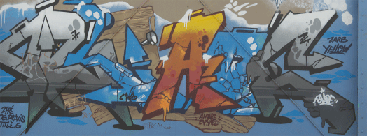
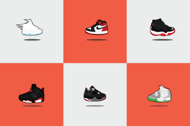
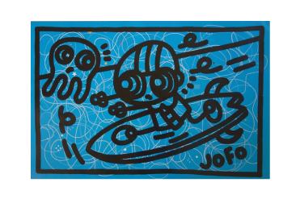
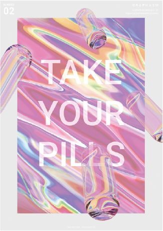
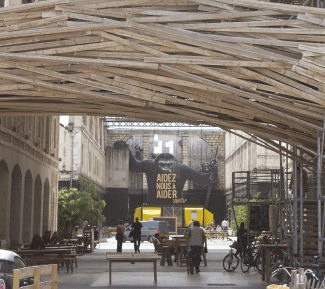

À PROPOS
Art Grafik est un magazine réalisé sur le thème de la culture urbaine, Il vous plonge dans un univers en pleine expansion qui touche principalement une cible jeune mais ne met personne à l’écart, que ce soit l’étudiant en galère jusqu’au DA qui brasse ! Il est rempli d’articles qui sauront informer, distraire et cultiver les lecteurs. Le but premier est de vous distraire le plus possible en vous parlant de ce que vous aimez et le but second est de combler votre appétit du design. Grâce à son design simple mais efficace et sa mise en page décalée il sort du lot des autres magazines. Le magazine sera trimestriel ce qui équivaut à 4 exemplaires par an. Ce magazine est destiné à des lecteurs amateurs d’art, de design, de bons plans, de sapes, de musique... Bref un vrai lifestyle complet !
L'HISTOIRE DU STREET ART
Les œuvres d’arts enrichissent notre patrimoine et se trouvent communément sous forme d’exposition dans les musées et galeries. Quand n’est-il pour les autres formes d’arts? La rue offre aux passants et aux publics des graphismes souvent éphémères qui naissent puis disparaissent au fil du temps. De nos jours, la société reste partagée sur le sujet des graffitis, certains considèrent ces inscriptions comme un acte de vandalisme et d’autres comme une oeuvre picturale a part entière...
En savoir + L'HISTOIRE DES SNEAKERS
DU XIXème SIÈCLE À AUJOURD'HUI
Le terme « sneakers » fait aujourd’hui partie du quotidien. Mais avant d’être ce phénomène de mode dont nous avons tous (ou presque) été victimes au moins une fois, les sneakers ont connu bien d’autres utilisations. Nous vous proposons de les découvrir dans ce nouveau guide grâce auquel vous pourrez tout savoir sur leur histoire, de leur apparition au XIXème siècle jusqu’à la sortie des toutes dernières paires...
En savoir + EXPO : GALERIE / D.X JOFO
Artiste multiforme, peintre, dessinateur, affichiste, vidéaste, chanteur et auteur du groupe rock “SNOC”, architecte de formation, autodidacte en tout, Jofo crée depuis plus de 25 ans son alphabet personnel, un univers affectif d’histoires de « toto », petit personnage aux yeux ronds, perplexe, mélancolique mais positif et cool... Sa peinture faite de liberté, parle au plus grand nombre, de famille, de société, d’amour, de sexualité, de séparation, de rock, de guerre, d’attentat, de religion, de sport, de petits bonheurs et de scènes de vies…
En savoir + BAUGASM, LA CRÉATION D'UNE AFFICHE PAR JOUR PENDANT UN AN
Vasjen Katro est un designer spécialisé en expérience utilisateur et interface habitant en Albanie. En 2016, il prend pour défi impressionnant de créer une affiche graphique par jour pendant 365 jours. Chaque affiche est proposée sur instagram et sur le site dédié au projet Baugasm...
En savoir + DARWIN - L'ÉCO-SYSTÈME
Il y a 230 entreprises installées à Darwin avec de multiples secteurs tel que l’ agro-alimetaire, l’ architecture, la communication, la formation, la gastronomie, la mode, etc... C’est dans cet écrin patrimonial majestueux qu’Evolution pose la première pierre de DARWIN et y installe une multitude d’activités en préservant au maximum tout ce qui peut l’être...
En savoir + 